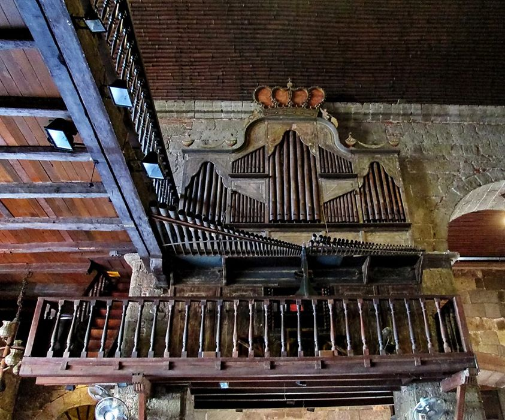

The church is commonly known as the Las Pinas Bamboo Organ Church, which is the Roman Catholic Church of Las Pinas.
Its common name comes from the organ in site, because it is a pipe organ mostly made using bamboo tubes.
Due to its excellent construction, it has stood the test of time.

Bamboo organ Museum
This museum displays artifacts and old photographs of the St Joseph Parish Church.
The museum will show and explain the history of the church and how it was built,
and the significant contributions that were brought about from its existence.